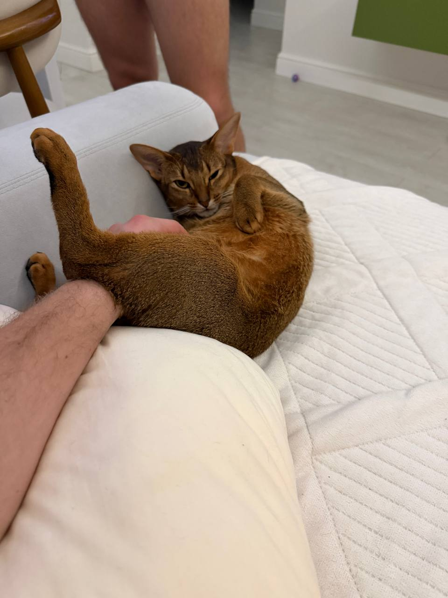
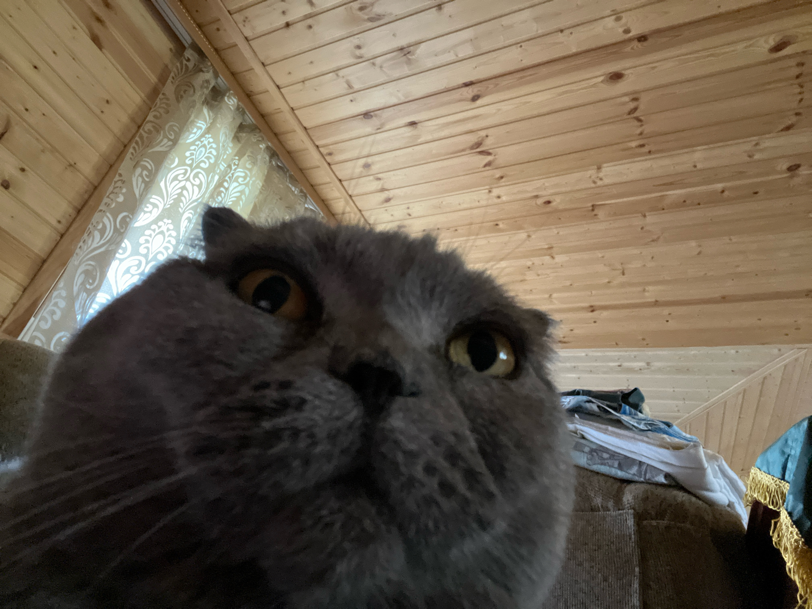

// КРЕСТИКИ-НОЛИКИ <РЕЖИМ_ВЗЛОМА>
> ИНИЦИАЛИЗАЦИЯ...
ВЫБЕРИТЕ СВОЁ ОРУЖИЕ:
✕
○
ВНИМАНИЕ: ИИ НЕПОБЕДИМ
ВЫ:
0
| ИИ:
0
| НИЧЬЯ:
0
[ ЗАНОВО ]
🔊

СИСТЕМА ВЗЛОМАНА. ВЫ ПРОИГРАЛИ.
> СОПРОТИВЛЕНИЕ БЕСПОЛЕЗНО <
[ ПОПРОБОВАТЬ СНОВА ]

ВЗЛОМ ПРОВАЛИЛСЯ. ВЫ ПОБЕДИЛИ!
> СИСТЕМА НЕ УСТОЯЛА <
[ СЫГРАТЬ ЕЩЁ ]
ЗАФИКСИРОВАНА НИЧЬЯ.
> ПОЧТИ ПОЛУЧИЛОСЬ. НО НЕ СОВСЕМ. <
[ РЕВАНШ ]